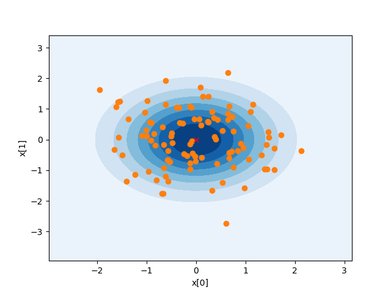
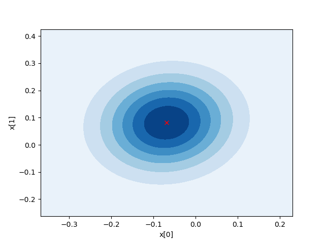

bayesml.multivariate_normal package
Contents
bayesml.multivariate_normal package¶
Module contents¶
The multivariate normal distribution with normal-wishart prior distribution.
The stochastic data generative model is as follows:
\(D \in \mathbb{N}\): a dimension of data
\(\boldsymbol{x} \in \mathbb{R}^D\): a data point
\(\boldsymbol{\mu} \in \mathbb{R}^D\): a parameter
\(\boldsymbol{\Lambda} \in \mathbb{R}^{D\times D}\) : a parameter (a positive definite matrix)
\(| \boldsymbol{\Lambda} | \in \mathbb{R}\): the determinant of \(\boldsymbol{\Lambda}_0\)
The prior distribution is as follows:
\(\boldsymbol{m}_0 \in \mathbb{R}^{D}\): a hyperparameter
\(\kappa_0 \in \mathbb{R}_{>0}\): a hyperparameter
\(\nu_0 \in \mathbb{R}\): a hyperparameter (\(\nu_0 > D-1\))
\(\boldsymbol{W}_0 \in \mathbb{R}^{D\times D}\): a hyperparameter (a positive definite matrix)
\(\mathrm{Tr} \{ \cdot \}\): a trace of a matrix
\(\Gamma (\cdot)\): the gamma function
where \(B(\boldsymbol{W}_0, \nu_0)\) is defined as follows:
The posterior distribution is as follows:
\(\boldsymbol{x}^n = (\boldsymbol{x}_1, \boldsymbol{x}_2, \dots , \boldsymbol{x}_n) \in \mathbb{R}^{D\times n}\): given data
\(\boldsymbol{m}_n \in \mathbb{R}^{D}\): a hyperparameter
\(\kappa_n \in \mathbb{R}_{>0}\): a hyperparameter
\(\nu_n \in \mathbb{R}\): a hyperparameter \((\nu_0 > D-1)\)
\(\boldsymbol{W}_n \in \mathbb{R}^{D\times D}\): a hyperparameter (a positive definite matrix)
where the updating rule of the hyperparameters is
The predictive distribution is as follows:
\(\boldsymbol{x}_{n+1} \in \mathbb{R}^D\): a new data point
\(\boldsymbol{\mu}_\mathrm{p} \in \mathbb{R}^D\): the hyperparameter of the predictive distribution
\(\boldsymbol{\Lambda}_\mathrm{p} \in \mathbb{R}^{D \times D}\): the hyperparameter of the predictive distribution (a positive definite matrix)
\(\nu_\mathrm{p} \in \mathbb{R}_{>0}\): the hyperparameter of the predictive distribution
where the parameters are obtained from the hyperparameters of the posterior distribution as follows:
- class bayesml.multivariate_normal.GenModel(*, degree=None, mu_vec=None, lambda_mat=None, h_m_vec=None, h_kappa=1.0, h_nu=None, h_w_mat=None, seed=None)¶
Bases:
bayesml.base.GenerativeThe stochastic data generative model and the prior distribution
- Parameters
- degreeint, optional
a positive integer. Default is None, in which case a value consistent with
mu_vec,lambda_mat,h_m_vec,h_w_mat, and ``h_nu` is used. If all of them are not given, degree is assumed to be 2.- mu_vecnumpy.ndarray, optional
a vector of real numbers, by default [0.0, 0.0, … , 0.0]
- lambda_matnumpy.ndarray, optional
a positive definite symetric matrix, by default the identity matrix
- h_m_vecnumpy.ndarray, optional
a vector of real numbers, by default [0.0, 0.0, … , 0.0]
- h_kappafloat, optional
a positive real number, by default 1.0
- h_nufloat, optional
a real number > degree-1, by default the value of
degree- h_w_matnumpy.ndarray, optional
a positive definite symetric matrix, by default the identity matrix
- seed{None, int}, optional
A seed to initialize numpy.random.default_rng(), by default None
Methods
Generate the parameter from the prior distribution.
gen_sample(sample_size)Generate a sample from the stochastic data generative model.
Get the hyperparameters of the prior distribution.
Get the parameter of the sthocastic data generative model.
load_h_params(filename)Load the hyperparameters to h_params.
load_params(filename)Load the parameters saved by
save_params.save_h_params(filename)Save the hyperparameters using python
picklemodule.save_params(filename)Save the parameters using python
picklemodule.save_sample(filename, sample_size)Save the generated sample as NumPy
.npzformat.set_h_params(**kwargs)Set the hyperparameters of the prior distribution.
set_params(mu_vec, lambda_mat)Set the parameter of the sthocastic data generative model.
visualize_model([sample_size])Visualize the stochastic data generative model and generated samples.
- set_h_params(**kwargs)¶
Set the hyperparameters of the prior distribution.
- Parameters
- **kwargs
a python dictionary {‘h_m_vec’:ndarray, ‘h_kappa’:float, ‘h_nu’:float, ‘h_w_mat’:ndarray} or {‘h0_m_vec’:ndarray, ‘h0_kappa’:float, ‘h0_nu’:float, ‘h0_w_mat’:ndarray} or {‘hn_m_vec’:ndarray, ‘hn_kappa’:float, ‘hn_nu’:float, ‘hn_w_mat’:ndarray} They are obtained by
get_h_params()of GenModel,get_h0_paramsof LearnModel orget_hn_paramsof LearnModel.
- get_h_params()¶
Get the hyperparameters of the prior distribution.
- Returns
- h_params{str:float, np.ndarray}
"h_m_vec": The value ofself.h_mu_vec"h_kappa": The value ofself.h_kappa"h_nu": The value ofself.h_nu"h_w_mat": The value ofself.h_lambda_mat
- gen_params()¶
Generate the parameter from the prior distribution.
The generated vaule is set at
self.mu_vecandself.lambda_mat.
- set_params(mu_vec, lambda_mat)¶
Set the parameter of the sthocastic data generative model.
- Parameters
- mu_vecnumpy.ndarray
a vector of real numbers
- lambda_matnumpy.ndarray
a positive definite symetric matrix
- get_params()¶
Get the parameter of the sthocastic data generative model.
- Returns
- params{str:float, numpy.ndarray}
"mu_vec": The value ofself.mu_vec"lambda_mat": The value ofself.lambda_mat
- gen_sample(sample_size)¶
Generate a sample from the stochastic data generative model.
- Parameters
- sample_sizeint
A positive integer
- Returns
- xnumpy ndarray
2-dimensional array whose shape is
(sammple_size,degree)and its elements are real number.
- save_sample(filename, sample_size)¶
Save the generated sample as NumPy
.npzformat.It is saved as a NpzFile with keyword: “x”.
- Parameters
- filenamestr
The filename to which the sample is saved.
.npzwill be appended if it isn’t there.- sample_sizeint
A positive integer
See also
- visualize_model(sample_size=100)¶
Visualize the stochastic data generative model and generated samples.
- Parameters
- sample_sizeint, optional
A positive integer, by default 1
Examples
>>> from bayesml import multivariate_normal >>> model = multivariate_normal.GenModel() >>> model.visualize_model() mu: [0. 0.] lambda_mat: [[1. 0.] [0. 1.]]
- class bayesml.multivariate_normal.LearnModel(degree=None, h0_m_vec=None, h0_kappa=1.0, h0_nu=None, h0_w_mat=None)¶
Bases:
bayesml.base.Posterior,bayesml.base.PredictiveMixinThe posterior distribution and the predictive distribution.
- Parameters
- degreeint, optional
a positive integer. Default is None, in which case a value consistent with
h_m_vec,h_w_mat, and ``h_nu` is used. If all of them are not given, degree is assumed to be 2.- h0_m_vecnumpy.ndarray, optional
a vector of real numbers, by default [0.0, 0.0, … , 0.0]
- h0_kappafloat, optional
a positive real number, by default 1.0
- h0_nufloat, optional
a real number > degree-1, by default the value of
degree- h0_w_matnumpy.ndarray, optional
a positive definite symetric matrix, by default the identity matrix
- Attributes
- h0_w_mat_invnumpy.ndarray
the inverse matrix of h0_w_mat
- hn_m_vecnumpy.ndarray
a vector of real numbers
- hn_kappafloat
a positive real number
- hn_nufloat
a real number
- hn_w_matnumpy.ndarray
a positive definite symetric matrix
- hn_w_mat_invnumpy.ndarray
the inverse matrix of hn_w_mat
- p_m_vecnumpy.ndarray
a vector of real numbers
- p_nufloat, optional
a positive real number
- p_v_matnumpy.ndarray
a positive definite symetric matrix
- p_v_mat_invnumpy.ndarray
the inverse matrix of p_v_mat
Methods
Calculate the parameters of the predictive distribution.
estimate_params([loss])Estimate the parameter of the stochastic data generative model under the given criterion.
Get the initial values of the hyperparameters of the posterior distribution.
Get the hyperparameters of the posterior distribution.
Get the parameters of the predictive distribution.
load_h0_params(filename)Load the hyperparameters to h0_params.
load_hn_params(filename)Load the hyperparameters to hn_params.
make_prediction([loss])Predict a new data point under the given criterion.
Overwrite the initial values of the hyperparameters of the posterior distribution by the learned values.
pred_and_update(x[, loss])Predict a new data point and update the posterior sequentially.
Reset the hyperparameters of the posterior distribution to their initial values.
save_h0_params(filename)Save the hyperparameters using python
picklemodule.save_hn_params(filename)Save the hyperparameters using python
picklemodule.set_h0_params(**kwargs)Set the hyperparameters of the prior distribution.
set_hn_params(**kwargs)Set updated values of the hyperparameter of the posterior distribution.
Update the hyperparameters of the posterior distribution using traning data.
Visualize the posterior distribution for the parameter.
- set_h0_params(**kwargs)¶
Set the hyperparameters of the prior distribution.
- Parameters
- **kwargs
a python dictionary {‘h_m_vec’:ndarray, ‘h_kappa’:float, ‘h_nu’:float, ‘h_w_mat’:ndarray} or {‘h0_m_vec’:ndarray, ‘h0_kappa’:float, ‘h0_nu’:float, ‘h0_w_mat’:ndarray} or {‘hn_m_vec’:ndarray, ‘hn_kappa’:float, ‘hn_nu’:float, ‘hn_w_mat’:ndarray} They are obtained by
get_h_params()of GenModel,get_h0_paramsof LearnModel orget_hn_paramsof LearnModel.
- get_h0_params()¶
Get the initial values of the hyperparameters of the posterior distribution.
- Returns
- h0_paramsdict of {str: float, numpy.ndarray}
"h0_m_vec": The value ofself.h0_m_vec"h0_kappa": The value ofself.h0_kappa"h0_nu": The value ofself.h0_nu"h0_w_mat": The value ofself.h0_w_mat
- set_hn_params(**kwargs)¶
Set updated values of the hyperparameter of the posterior distribution.
- Parameters
- **kwargs
a python dictionary {‘h_m_vec’:ndarray, ‘h_kappa’:float, ‘h_nu’:float, ‘h_w_mat’:ndarray} or {‘h0_m_vec’:ndarray, ‘h0_kappa’:float, ‘h0_nu’:float, ‘h0_w_mat’:ndarray} or {‘hn_m_vec’:ndarray, ‘hn_kappa’:float, ‘hn_nu’:float, ‘hn_w_mat’:ndarray} They are obtained by
get_h_params()of GenModel,get_h0_paramsof LearnModel orget_hn_paramsof LearnModel.
- get_hn_params()¶
Get the hyperparameters of the posterior distribution.
- Returns
- hn_paramsdict of {str: numpy.ndarray}
"hn_m_vec": The value ofself.hn_m_vec"hn_kappa": The value ofself.hn_kappa"hn_nu": The value ofself.hn_nu"hn_w_mat": The value ofself.hn_w_mat
- reset_hn_params()¶
Reset the hyperparameters of the posterior distribution to their initial values.
They are reset to self.h0_m_vec, self.h0_kappa, self.h0_nu and self.h0_w_hat. Note that the parameters of the predictive distribution are also calculated from self.h0_m_vec, self.h0_kappa, self.h0_nu and self.h0_w_hat.
- overwrite_h0_params()¶
Overwrite the initial values of the hyperparameters of the posterior distribution by the learned values.
They are overwitten by self.hn_m_vec, self.hn_kappa, self.hn_nu and self.hn_w_mat. Note that the parameters of the predictive distribution are also calculated from self.hn_m_vec, self.hn_kappa, self.hn_nu and self.hn_w_mat.
- update_posterior(x)¶
Update the hyperparameters of the posterior distribution using traning data.
- Parameters
- xnumpy.ndarray
All the elements must be real number.
- estimate_params(loss='squared')¶
Estimate the parameter of the stochastic data generative model under the given criterion.
Note that the criterion is applied to estimating
mu_vecandlambda_matindependently. Therefore, a tuple of the student’s t-distribution and the wishart distribution will be returned when loss=”KL”- Parameters
- lossstr, optional
Loss function underlying the Bayes risk function, by default “squared”. This function supports “squared”, “0-1”, and “KL”.
- Returns
- Estimatestuple of {numpy ndarray, float, None, or rv_frozen}
mu_vec_hat: the estimate for mu_veclambda_mat_hat: the estimate for lambda_mat
The estimated values under the given loss function. If it is not exist, None will be returned. If the loss function is “KL”, the posterior distribution itself will be returned as rv_frozen object of scipy.stats.
- visualize_posterior()¶
Visualize the posterior distribution for the parameter.
Examples
>>> from bayesml import multivariate_normal >>> gen_model = multivariate_normal.GenModel() >>> x = gen_model.gen_sample(100) >>> learn_model = multivariate_normal.LearnModel() >>> learn_model.update_posterior(x) >>> learn_model.visualize_posterior() hn_m_vec: [-0.06924909 0.08126454] hn_kappa: 101.0 hn_nu: 102.0 hn_w_mat: [[ 0.00983415 -0.00059828] [-0.00059828 0.00741698]] E[lambda_mat]= [[ 1.0030838 -0.06102455] [-0.06102455 0.7565315 ]]
- get_p_params()¶
Get the parameters of the predictive distribution.
- Returns
- p_paramsdict of {str: numpy.ndarray}
"p_m_vec": The value ofself.p_m_vec"p_nu": The value ofself.p_nu"p_v_mat": The value ofself.p_v_mat
- calc_pred_dist()¶
Calculate the parameters of the predictive distribution.
- make_prediction(loss='squared')¶
Predict a new data point under the given criterion.
- Parameters
- lossstr, optional
Loss function underlying the Bayes risk function, by default “squared”. This function supports “squared”, “0-1”, and “KL”.
- Returns
- Predicted_value{float, numpy.ndarray}
The predicted value under the given loss function. If the loss function is “KL”, the posterior distribution itself will be returned as rv_frozen object of scipy.stats.
- pred_and_update(x, loss='squared')¶
Predict a new data point and update the posterior sequentially.
- Parameters
- xnumpy.ndarray
It must be a degree-dimensional vector
- lossstr, optional
Loss function underlying the Bayes risk function, by default “squared”. This function supports “squared”, “0-1”, and “KL”.
- Returns
- Predicted_value{float, numpy.ndarray}
The predicted value under the given loss function.